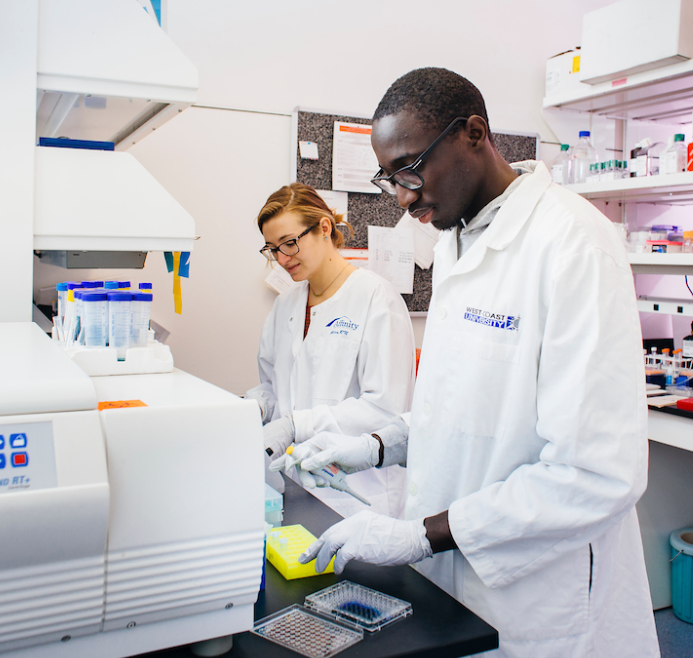
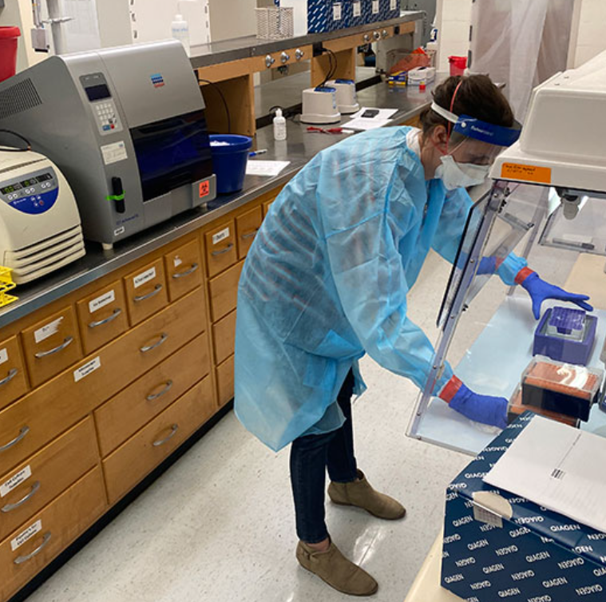
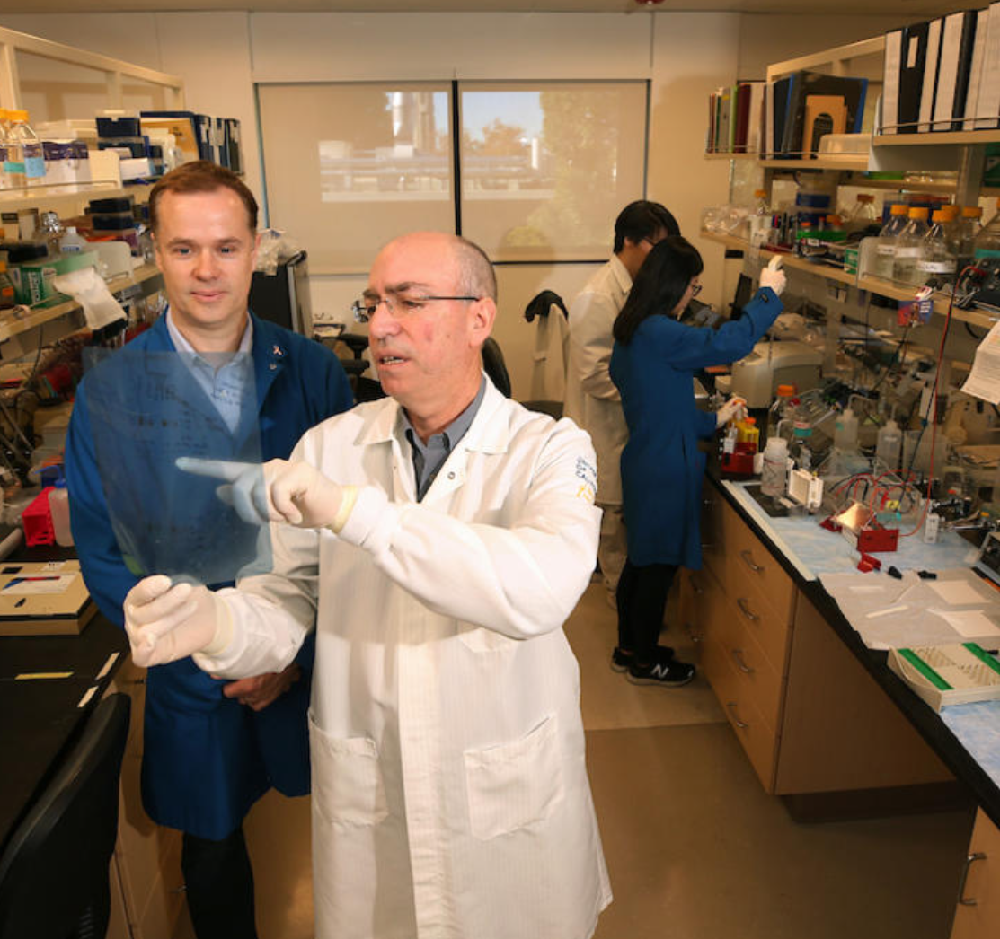
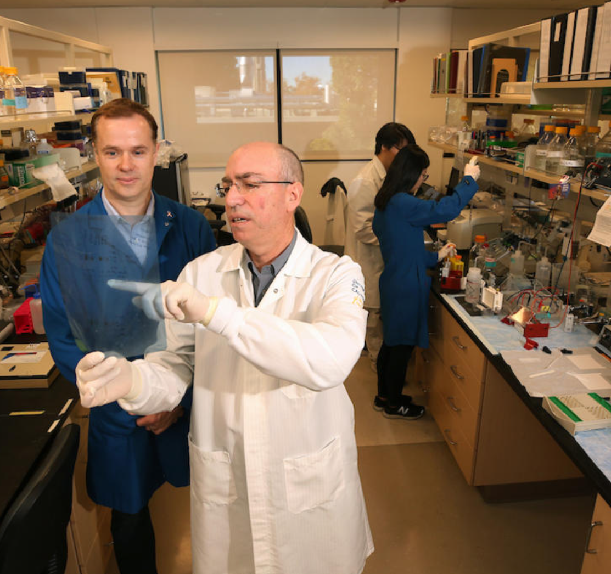
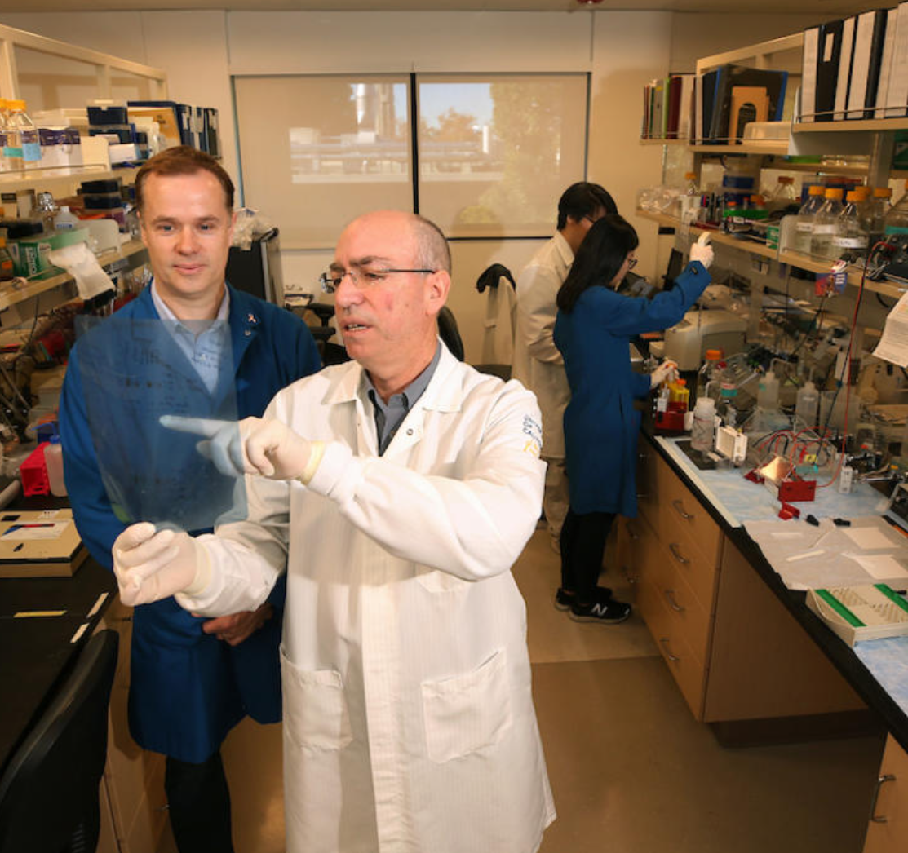

Alexie Raz
I am a biochem student of senior standing and set to graduate in Spring 2023 and a research lab assistant (March 2021 – Present) at the Chem Department. I contribute collected data and results to graduate research. Our most recent research has been published in a paper online. The research focuses on a sensing system that can be used to ID biological molecules such as proteins and motifs such as double helices and hairpins alongside other unusual shapes. I produce these aromatic compounds that can be used in solution – these compounds can be referred to as the guest and the holding molecule is called the host. Together the host:guest complex can be used to sense molecules through displacement of the target molecule. This displacement results in emitted light that can be recorded and used to determine the target molecule’s shape. This lab has trained me in lab techniques and is a springboard for a career in the sciences field. I hope to pursue either medical school or a program on forensic sciences.
Furthermore this lab and the research I am doing in it is important to a Capstone Project that I am conducting. This project is a requirement for the Honors program that I am in. I must conduct research under a professor and turn in a thesis. In addition I must present this research and conclusions prior to submitting the paper. I am planning to present the gathered research at a symposium this upcoming quarter in front of other students and their professors. In addition I am proficient in lab techniques as I mentioned before – nuclear magnetic resonance machines to be particular – and can use Microsoft Office and its utilities. I am interested in the biological sciences and am a biochem STEM major because as mentioned before I hope to either go to med school or perhaps join a short program that focuses more on forensics and its applications. I am not that interested in the legal system as I am in the sciences aspect. I hope to put something out there and contribute to people and important companies using research and scientific results. I hope that the time I spend in the lab can help me do that and much more.
On top of that I am a learning assistant on campus for intro organic chem courses. I help undergraduate students on in-class modules and facilitate and encourage group discussion and collaboration. I guide them through the problems and clear up points of confusion about concepts mentioned in the class. It’s been difficult for students because of the pandemic and resuming in-person classes rather than online and on Zoom. It is up to me to help them and smoothen the transition.
Experience
RESEARCH LAB ASSISTANT
• Collaborate with a team of graduate students to synthesize host and dye molecules to be used in host-guest sensing systems/sensor arrays for biosensing applications
• Analyze NMR (Nuclear Magnetic Resonance) results and communicate results
• Contribute collected data to be used in graduate research
LEARNING ASSISTANT
• Assist undergraduate students in in-class modules in organic chem intro course
• Facilitate and encourage group discussion, and promote a good environment for learning
• Clarify points of confusion and key concepts in the course to guide students
HONORS PROGRAM MEMBER
• Required to fulfill additional rigorous course requirements in honors courses/electives
• Currently working on a faculty-led Capstone project focusing on research
• Developed strong interpersonal and communication skills
Education
UNIVERSITY OF CALIFORNIA, RIVERSIDE
Portfolio


 

